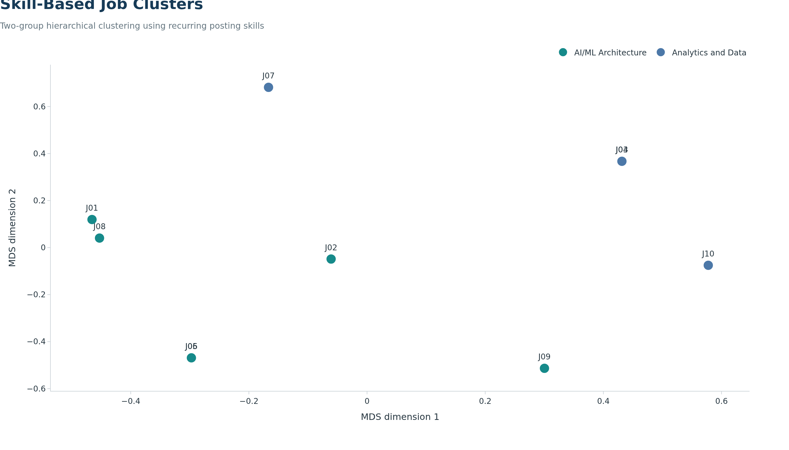
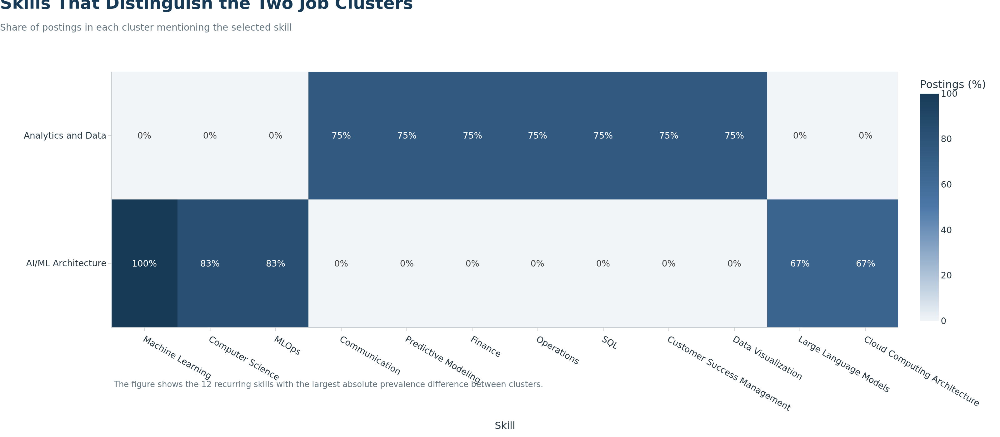

Exploratory Skill-Based Clustering of Software Publisher Roles
Objective
We use unsupervised learning to examine whether the audited job postings form meaningful groups based on their required skills. Our goal is descriptive: we want to identify different career pathways within the selected software publisher market, not predict outcomes for the broader labor market.
Because our final panel contains only 10 postings, a supervised salary or hiring model would not support a credible train-test evaluation. We therefore use hierarchical clustering and treat the results as exploratory evidence.
Model Data
Code
from pathlib import Pathimport numpy as npimport pandas as pdfrom sklearn.cluster import AgglomerativeClusteringfrom sklearn.manifold import MDSfrom sklearn.metrics import pairwise_distancesfrom sklearn.metrics import silhouette_scoreimport plotly.graph_objects as gofrom plotly_theme import BLUEfrom plotly_theme import NAVYfrom plotly_theme import TEALfrom plotly_theme import apply_job_market_themepanel_path = Path("data/processed/step3/career_market_panel.csv")skills_path = Path("data/processed/step3/career_market_skills.csv")figure_dir = Path("figures/step3")output_dir = Path("outputs/step3")figure_dir.mkdir(parents=True, exist_ok=True)output_dir.mkdir(parents=True, exist_ok=True)market_panel = pd.read_csv(panel_path)market_skills = pd.read_csv(skills_path)if market_panel["JOB_ID"].duplicated().any():raiseValueError("The market panel must contain one row per JOB_ID.")skill_aliases = {"Generative Artificial Intelligence": "Generative AI","MLOps (Machine Learning Operations)": "MLOps","Kafka": "Apache Kafka","Docker (Software)": "Docker"}market_skills["MODEL_SKILL"] = market_skills["SKILL"].replace( skill_aliases)market_skills = market_skills.drop_duplicates( subset=["JOB_ID", "MODEL_SKILL"])skill_frequency = ( market_skills .groupby("MODEL_SKILL")["JOB_ID"] .nunique() .sort_values(ascending=False))# Retain skills appearing in at least 3 of the 10 postings. This reduces the# influence of one-off terms while keeping skills observed in at least 30% of# the audited market panel.model_skill_names = skill_frequency[ skill_frequency >=3].index.tolist()feature_matrix = ( market_skills[ market_skills["MODEL_SKILL"].isin(model_skill_names) ] .assign(PRESENT=1) .pivot_table( index="JOB_ID", columns="MODEL_SKILL", values="PRESENT", aggfunc="max", fill_value=0 ) .reindex(market_panel["JOB_ID"], fill_value=0))if feature_matrix.shape[1] <2:raiseValueError("Too few recurring skills are available for clustering.")model_input_summary = pd.DataFrame({"Measure": ["Distinct postings","Unique normalized skills","Skills retained for modeling","Minimum posting frequency" ],"Value": [ market_panel["JOB_ID"].nunique(), market_skills["MODEL_SKILL"].nunique(), feature_matrix.shape[1],"3 postings (30%)" ]})model_input_summary
Measure
Value
0
Distinct postings
10
1
Unique normalized skills
174
2
Skills retained for modeling
38
3
Minimum posting frequency
3 postings (30%)
Each row of the modeling matrix represents one job posting. Each retained skill is a binary feature: 1 means the posting lists the skill and 0 means it does not. We use Jaccard distance because it compares shared presences in binary data without treating two shared absences as evidence that postings are similar.
The three-cluster solution has the highest silhouette score, but it creates a cluster containing only one posting. The four-cluster solution creates two single-posting clusters. We select two clusters because both resulting groups contain multiple observations and provide a more stable, interpretable career comparison. This choice balances quantitative separation with the limitations of our small sample.
The clustering separates six AI/ML architecture-oriented postings from four analytics-and-data postings. The first group contains the AI solution architect, enterprise architect, ML architect, and applied scientist roles. The second contains the customer-success data science, data scientist/data analyst, and analytics engineer roles.
Visualizing the Cluster Structure
Code
try: mds_model = MDS( n_components=2, dissimilarity="precomputed", random_state=42, n_init=20, max_iter=1000, normalized_stress="auto" )exceptTypeError: mds_model = MDS( n_components=2, dissimilarity="precomputed", random_state=42, n_init=20, max_iter=1000 )coordinates = mds_model.fit_transform(distance_matrix)cluster_plot_data = clustered_panel[["PLOT_ID","TITLE_RAW","ROLE_SEGMENT","CLUSTER_NAME"]].copy()cluster_plot_data["MDS_1"] = coordinates[:, 0]cluster_plot_data["MDS_2"] = coordinates[:, 1]cluster_colors = {"AI/ML Architecture": TEAL,"Analytics and Data": BLUE}cluster_order = ["AI/ML Architecture","Analytics and Data"]fig_clusters = go.Figure()for cluster_name in cluster_order: cluster_rows = cluster_plot_data[ cluster_plot_data["CLUSTER_NAME"] == cluster_name ] fig_clusters.add_trace(go.Scatter( x=cluster_rows["MDS_1"], y=cluster_rows["MDS_2"], mode="markers+text", name=cluster_name, text=cluster_rows["PLOT_ID"], textposition="top center", marker={"color": cluster_colors[cluster_name],"size": 18,"line": {"color": "white", "width": 1.5} }, customdata=cluster_rows[["TITLE_RAW","ROLE_SEGMENT" ]].to_numpy(), hovertemplate=("%{text}<br>""%{customdata[0]}<br>""Role segment: %{customdata[1]}""<extra></extra>" ) ))apply_job_market_theme( fig_clusters, title="Skill-Based Job Clusters", subtitle=("Two-group hierarchical clustering using recurring posting skills" ), x_title="MDS dimension 1", y_title="MDS dimension 2", note=("Points that are closer together have more similar skill profiles; ""axis direction has no independent substantive meaning." ), height=650, showlegend=True, grid_axis="none")fig_clusters.write_image( figure_dir /"ml_skill_clusters.png", width=1400, height=800, scale=2)

Two skill-based clusters of the audited job postings.
The map is a two-dimensional representation of the Jaccard distances used by the clustering model. The axes are positioning dimensions rather than measured job attributes, so only the relative distances and group membership should be interpreted.
Skills That Differentiate the Clusters
Code
cluster_prevalence = feature_matrix.copy()cluster_prevalence["CLUSTER_NAME"] = cluster_namescluster_prevalence = ( cluster_prevalence .groupby("CLUSTER_NAME") .mean() .mul(100))prevalence_difference = ( cluster_prevalence.loc["AI/ML Architecture"]- cluster_prevalence.loc["Analytics and Data"]).abs().sort_values(ascending=False)differentiating_skills = prevalence_difference.head(12).index.tolist()heatmap_values = cluster_prevalence.loc[ cluster_order, differentiating_skills]fig_cluster_heatmap = go.Figure( data=go.Heatmap( z=heatmap_values.to_numpy(), x=heatmap_values.columns.tolist(), y=heatmap_values.index.tolist(), zmin=0, zmax=100, colorscale=[ [0.00, "#F1F5F8"], [0.50, BLUE], [1.00, NAVY] ], text=heatmap_values.to_numpy(), texttemplate="%{text:.0f}%", hovertemplate=("Cluster: %{y}<br>""Skill: %{x}<br>""Posting prevalence: %{z:.0f}%""<extra></extra>" ), colorbar={"title": "Postings (%)"} ))apply_job_market_theme( fig_cluster_heatmap, title="Skills That Distinguish the Two Job Clusters", subtitle="Share of postings in each cluster mentioning the selected skill", x_title="Skill", y_title="", note=("The figure shows the 12 recurring skills with the largest absolute ""prevalence difference between clusters." ), height=560, grid_axis="none")fig_cluster_heatmap.write_image( figure_dir /"ml_cluster_skill_heatmap.png", width=1600, height=700, scale=2)

Skill prevalence within the two job clusters.
Machine Learning appears in every AI/ML Architecture posting, while MLOps and Computer Science appear in five of the six. Cloud Architecture, Solution Architecture, Java, Large Language Models, and Generative AI also distinguish this group. The Analytics and Data cluster is differentiated by SQL, Data Visualization, Predictive Modeling, Operations, Finance, Communication, and Customer Success Management, each appearing in three of its four postings.
The cluster results identify two different routes within our filtered market:
AI/ML Architecture emphasizes production-oriented machine learning, MLOps, cloud architecture, generative AI, and solution design. This pathway is attractive because these skills are common in the audited postings, but it currently has the largest overlap with the high-priority gaps identified in our skill-gap analysis.
Analytics and Data emphasizes SQL, visualization, predictive analysis, and business-facing applications. This pathway is closer to our current strengths in SQL, Data Modeling, and Data Visualization and is therefore the more attainable short-term entry point.
The salary values do not support a reliable comparison between clusters. All six AI/ML Architecture postings report usable salary information, whereas only one of the four Analytics and Data postings does. We therefore report salary coverage and medians transparently but do not interpret the difference as a cluster-level compensation effect.
Limitations
Our analysis uses only 10 postings, including one core Data Scientist posting, so the clusters may change if additional postings are added. Skill presence is also binary and does not measure the proficiency expected by an employer. The MDS chart simplifies many skill dimensions into two display dimensions, and its axes have no independent meaning. Consequently, the clusters are best used as an exploratory career-planning framework rather than a general market taxonomy or predictive model.